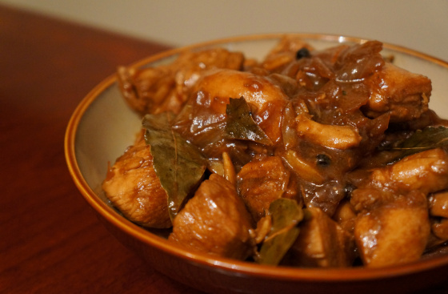
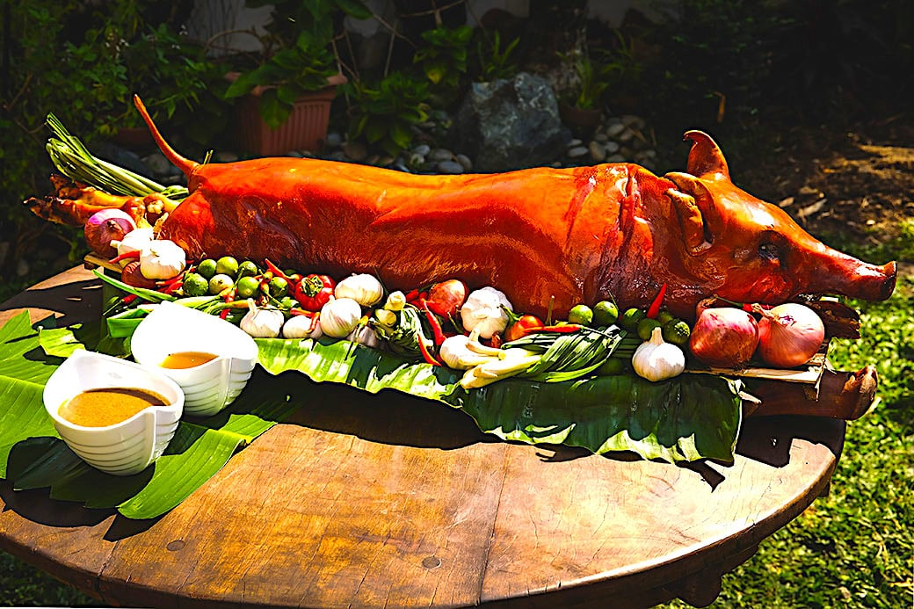

Popular Filipino Dishes

ADOBO
One of the most popular Filipino dishes is adobo,
which is also maybe the most significant item on this list. It is
frequently recognized as a national dish of the Philippines. Similar
to sinigang, the term "adobo" can be used to describe both the food
and the preparation technique.

BULALO
A beef dish from the Philippines is called bulalo.
The beef shanks and marrow bones are cooked until the collagen and fat
have melted into the clear liquid to produce this light-colored soup.
The Southern Luzon region of the Philippines is where Bulalo is indigenous.
Regarding its beginning, numerous references have emerged.

LECHON
One of the most well-liked foods in the Philippines is
lechon, which is derived from a Spanish phrase for roasted suckling pig.
Typically packed with lemongrass, tamarind, garlic, onions, and chives,
the slow-roasted suckling pig is then cooked over an open flame on a long
bamboo spit.

SHANGHAI
A blend of giniling wrapped in a delicate egg crêpe
makes up the Filipino appetizer known as lumpiang shanghai, which is deep-fried.
The most basic lumpia in Filipino cuisine is called lumpiang Shanghai, and it
is often smaller and thinner than other lumpia varieties.
SINIGANG
A soup or stew from the Philippines known as sinigang
is known for its sour and delicious flavor. Although it can also use other sour fruits
and leaves as the souring ingredient, tamarind is most frequently associated with it.
It is one of the more well-known Filipino foods. Rice typically goes with the soup.

TORTANG TALONG
Tortang talong, also known as eggplant omelette, is
an omelette or fritter from Filipino cuisine made by pan-frying grilled whole
eggplants dipped in an egg mixture. It is a popular breakfast and lunch meal in
the Philippines.
Native Filipino Delicacies
PUTO
A common delicacy enjoyed as a snack or breakfast item is puto.
It is a steamed rice cake made with coconut milk, sugar, and plain milled rice.
The mixture is poured into a mold, which may or may not be lined with banana leaves.
After that, it is steam-cooked until it is firm to the touch.

BIKO
Biko is a sweet rice cake from the Philippines. It is made of
coconut milk, brown sugar, and sticky rice. It is usually topped with latik. It is a type
of kalamay dish and is prepared similarly, except the rice grains are not ground into a paste.
They are also sometimes packaged and sold as suman.

SAPIN - SAPIN
A dessert made of layers of sticky rice and coconut is called
sapin-sapin in the Philippines. Rice flour, coconut milk, sugar, water, flavoring, and
coloring are used to make it. Typically, latik, or roasted desiccated coconut flakes, are
sprinkled on top.

KUTSINTA
A steamed rice cake known as kutsinta can be found all across
the Philippines. It is prepared by combining tapioca or rice flour, brown sugar, and lye.
Yellow food coloring or annatto extract are added, and the mixture is heated in tiny ramekins.
TURON
The turon is rolled in a spring roll wrapper, cooked till crisp,
and then covered in brown sugar that has been caramelized. Turon may also have additional
fillings. Jackfruit (langka), which is the most popular, is also used in recipes, along
with sweet potatoes (kamote), mangoes (mangga), cheddar cheese, and coconut (niyog).